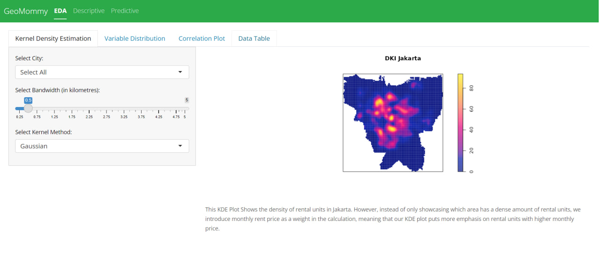
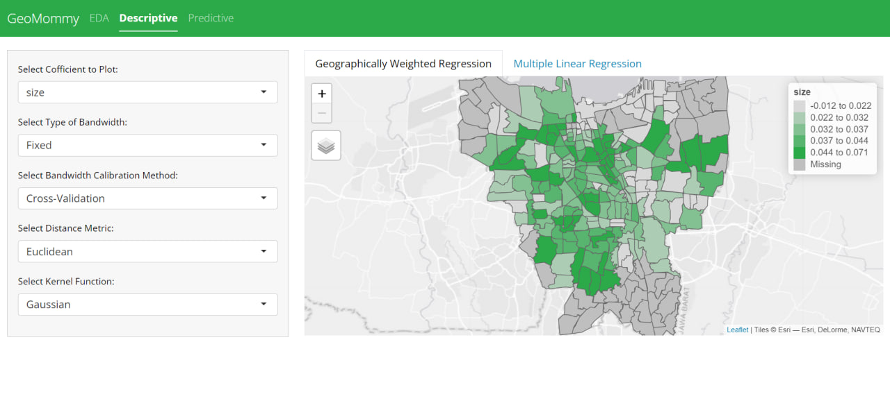

Project Proposal
1. Abstract
This project investigates room rental price prediction in Jakarta using geospatial analysis methods to assist home owners, property agents, and potential business owners in the rental market. Through Geospatial Weighted Regression, both descriptive and predictive methods, and Kernel Density Estimation techniques, we explore the spatial dynamics and determinants of rental prices across Jakarta’s diverse neighborhoods. By analyzing publicly available datasets and employing machine learning algorithms, we uncover spatial patterns, identify high-demand areas, and segment neighborhoods based on rental price similarities. The project culminates in the development of interactive visualizations that convey insights intuitively, facilitating informed decision making and strategic planning in Jakarta’s evolving rental market.
2. Problem & Motivation
Jakarta’s rapid urbanization and diverse demographic landscape present a complex challenge in understanding room rental prices. Traditional statistical methods overlook the spatial intricacies and demographic nuances that shape Jakarta’s rental market dynamics. Factors like proximity to transportation, amenities, and schools contribute to the complexity. To address this, we aim to employ Geographically Weighted Regression (GWR) models to predict rental prices across Jakarta’s neighborhoods. By capturing spatial variations in local amenities, GWR models offer tailored insights for stakeholders, enabling informed decisions amidst Jakarta’s evolving urban landscape.
3. Project Objectives
In light of the complexities and the lack of accurate, accessible tools for analyzing rental prices in Jakarta, there is a pressing need for a more refined approach that takes into account geographical nuances and offers real-time data visualization. The project is motivated by the opportunity to leverage recent advancements in spatial analysis and data visualization technologies to address these challenges. By creating an interactive, geographically informed platform, the project aims to democratize access to real estate data, enabling potential buyers, investors, and policymakers to make more informed decisions. Additionally, the project seeks to contribute to the academic and practical understanding of real estate valuation, offering insights that could refine existing models and improve the accuracy of future real estate market analyses.
4. Data Source
- Rental Listing Data
Rental unit data scraped from Mamikos, a popular leading property rental platform and management company in Indonesia. This dataset contains the listing price of rental units along with their respective features like size of the rooms, price, etc.
- Geospatial data of Jakarta
A shapefile contains the borders of administrative regions of Jakarta, along with the coordinates of amenities that are in the region. This data is taken from Indonesia Geospasial.
5. Approach & Methodology
5.1 Data Preparation
1. Data Sourcing
Our dataset will be sourced from Mamikos, a property rental platform in Indonesia. We will be focusing only on Jakarta’s rental units, as it is the capital city and the most populous city in Indonesia. The dataset will include rental prices, room sizes, and other relevant features that influence rental prices. The data is scraped using Selenium and BeautifulSoup libraries in Python.
2. Data Importing
The data importing will leverage on R libraries, such as dplyr for aspatial data, and sf for geospatial data. The data will be imported into R for further analysis and visualization.
3. Data Wrangling
The imported data undergoes cleaning and preprocessing to address missing values, outliers, and inconsistencies. This stage may involve normalization, encoding categorical variables, and data transformation to ensure compatibility with analysis methods. The data will be transformed into a spatial data frame using the sf library.
5.2 Exploratory Data Analysis
1. Statistical Graphs: Histogram, Box Plot
Key distributions and relationships within the data are visualized using histograms and box plots. Histograms reveal the distribution of rental prices and other numerical variables, while box plots identify outliers and the spread of data across categorical variables.
2. Point Pattern Analysis - Kernel Density Estimation
KDE plots help identify the density of rental properties across the city, offering insights into high-demand areas and potential patterns of spatial clustering. Price will also be used as a weight in the calculation, to offer more insight on high price rentals
5.3 Descriptive Analytics
1. Multiple Linear Regression (MLR)
Multiple Linear Regression is used to provide a global overview of how each feature affects the price of rental units in Jakarta. This model will be used to identify the most important features that affect the price of rental units in Jakarta.
2. Geographically Weighted Regression (GWR)
Using Geographically Weighted Regression, we are aiming to give users an insight of how each feature affects the price of rental units in each region of Jakarta. This model will be used to identify the most important features that affect the price of rental units in each region of Jakarta.
5.4 Predictive Analytics
1. Multiple Linear Regression
We are using a standard Multiple Linear Regression to predict the price of a rental unit, based on user inputs. The user inputs would be location (taken from the address that the user inputted), the gender of the room (if it’s a mixed unit, male-only, or female-only), size of the unit in meter square, and the year that the building is built or last renovated.
2. Geographically Weighted Random Forest
Building on the Multiple Linear Regression, we wanted to improve it further by introducing location as a geospatial feature to add more weight for closer units.
3.3 Geographically Weighted Random Forest
4. Literature Review
4.1 A Spatial Regression Model for Predicting Prices of Short-Term Rentals in Athens, Greece
Objective
Explores the factors affecting the prices of short-term rental properties listed on Airbnb in Athens, Greece. Using spatial data analysis, the study focuses on identifying significant predictors of rental prices, including property features, host attributes, review characteristics, and various location attributes
Methodology
- Multiple Regression Analysis (Ordinary Least Squares)
Explains the regression of a dependent variable over more than one independent variable
- Geographically Weighted Regression
A linear regression model which pays more attention to the local regression based on spatial relationship
Learning points

Consistent across studies is the finding that location significantly influences short-term rental prices. Proximity to tourist attractions, amenities, and transport links are pivotal in determining price points.
The characteristics of the property, such as the number of bedrooms and bathrooms, along with host-related factors like reviews and superhost status, play a crucial role in pricing
Areas for improvement
Concentrate on the rentals with high residuals and analyze the neighborhood characteristics and the amenities they offer. In addition, replacing Euclidean distances with distances along the road network might improve the results of the OLS model
4.2 Assessing the Impact of Selected Attributes on Dwelling Prices Using Ordinary Least Squares Regression and Geographically Weighted Regression: A Case Study in Poznań, Poland
Objective
Determine what factors affect transaction prices in Poznan, Poland.
Methodology
- Ordinary Least Squares
May be biassed as the OLS method does not take into account spatial autocorrelation.
- Moran’ I Test
Check if there are any spatial autocorrelation
- Geographically Weighted Regression
Allows the estimation of local coefficients based on samples within the bandwidth of a local location, which can solve the problem of spatial autocorrelation
Learning points
OLS only explains around 23% of the variability of the observed phenomenon
After conducting Moran’ I Test, the property prices seem to be spatially clustered and there is a positive spatial autocorrelation.
GWR returned an R Squared value of 0.477 and AIC of 15597.432. This indicates that GWR Performed better compared to the OLS method.
Areas for improvement
Gathering more precise data
Usage of other methods
Feature engineering - the variables selected are based on information from local real estate offices, which might overlook other important variables
4.3 Use of Geographically Weighted Regression (GWR) Method to Estimate the Effects of Location Attributes on the Residential Property Values
Objective
Estimate the effect of locational attributes on property values in Kuala Lumpur
Methodology
- Hedonic Pricing Model (HPM)
A standard prediction model that does not take into account characteristics such as spatial autocorrelation and spatial heterogeneity
- Geographically Weighted Regression (GWR)
Built on top of the HPM to prevents issues with spatial characteristics in the data
Learning points
This shows that while a traditional HPM can explain 73% of the variances, adding the spatial data can improve the accuracy.
The study shows that different locational attributes
have differential spatial effects on residential property
premiums across the study area.
Areas for improvement
Interpretation on the GWR Results - we can use qualitative methods, such as focus groups on the affected areas, to get a better interpretation of the GWR results
4.4 Modelling Housing Rents Using Spatial Autoregressive Geographically Weighted Regression: A Case Study in Cracow, Poland
Objective
Identify the determinants of rental prices in Cracow, Poland
Methodology
- Ordinary Least Squares Regression
Insufficient as the model does not take into account spatial relationships
- Spatial Autoregressive Model (SAR)
Includes a spatially lagged dependent variable to capture the influence of rental prices in nearby locations
- Mixed Geographically Weighted Regression - Spatial Autoregressive Model (MGWR-SAR)
Combined GWR with SAR
Learning points
GWR-SAR performed the best, as it can take in both both spatial non-stationarity of the parameters of determinants and change over space of the spatial autoregressive parameter
Areas for improvement
Exploring the thresholds of when and where spatial correlation and spatial heterogeneity becomes a significant factor in the analysis
Adapting the models to different spatial complexity, making it more portable and usable in different locations
5. Main Features
5.1 Exploratory Data Analysis
- Histogram to show distribution of different variables
- Correlation plot of the variables Browse through the dataset with a table
- Kernel Density Map of the different cities in Jakarta Adjustable bandwidth (in kilometres) and kernel method
5.2 Descriptive Analysis
- Show insights on local importance of features that explains the price of the rental units
- Users can adjust the configuration of both the GWR and MLR models to perform a descriptive analysis of the value of rental units in Jakarta
5.3 Predictive Analysis
- Predicts the price of the rental units based on the user input according to the chosen model (GWRF or MLR)
- Displays the performance of each model in terms of the predictions of the rental unit prices
6. UI Prototype
 
7. Application Architecture

8. Timeline
| Week 8 | Week 9 | Week 10 | Week 11 | Week 12 | Week 13 | |
|---|---|---|---|---|---|---|
| Research, Proposal & Prototyping | ⚫ | |||||
| Data Scraping, Data preprocessing | ⚫ | ⚫ | ||||
| Building Feature 1 | ⚫ | ⚫ | ⚫ | |||
| Integrating & Testing Feature 1 | ⚫ | |||||
| Building Feature 2 | ⚫ | ⚫ | ⚫ | |||
| Integrating & Testing Feature 2 | ⚫ | |||||
| Building Feature 3 | ⚫ | ⚫ | ⚫ | |||
| Integrating & Testing Feature 3 | ⚫ | |||||
| Final Integration and Testing | ⚫ | ⚫ | ||||
| Poster & Research Paper | ⚫ | ⚫ | ⚫ | |||
| Presentation Preparation | ⚫ | ⚫ |